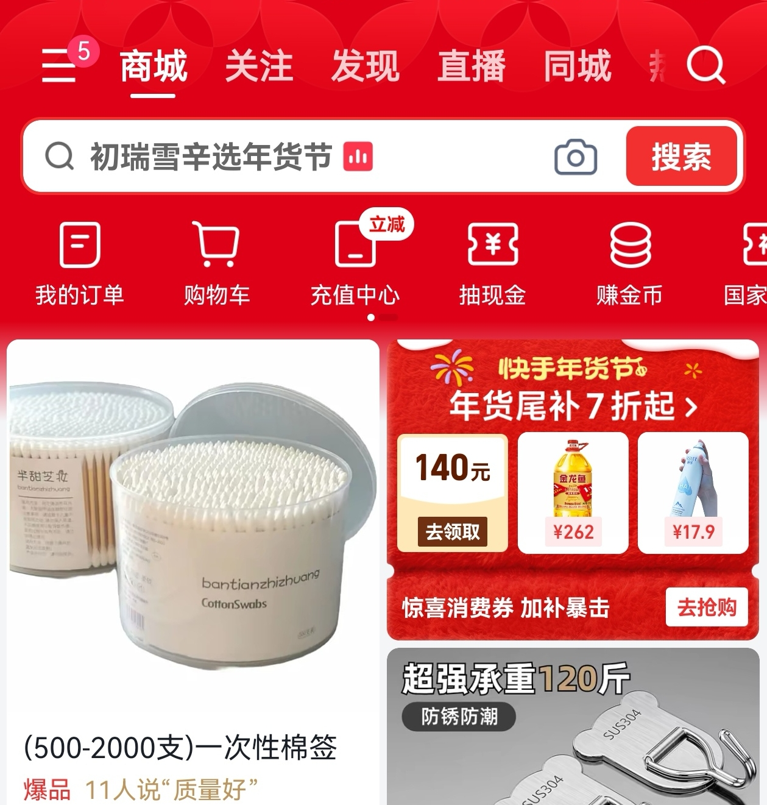
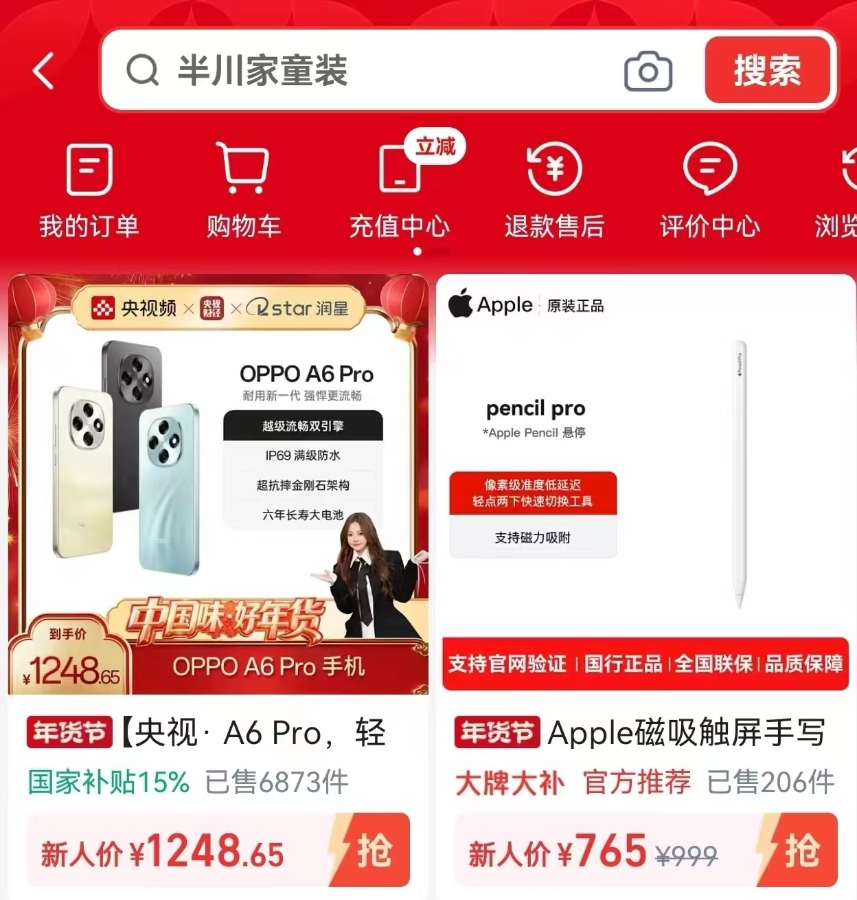
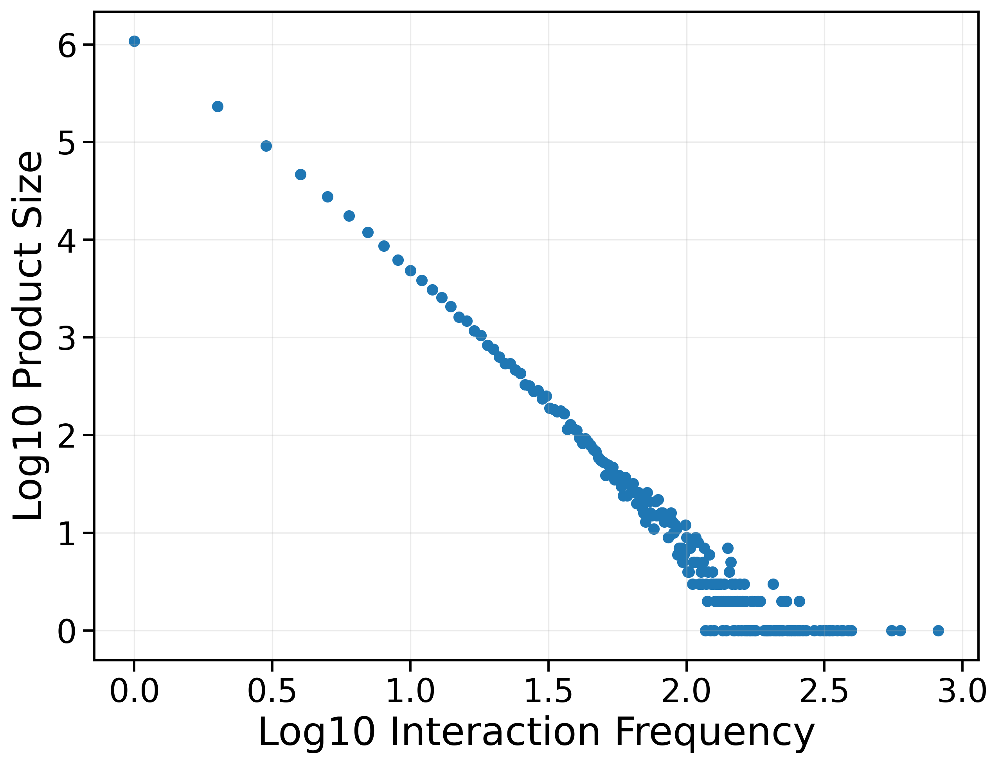
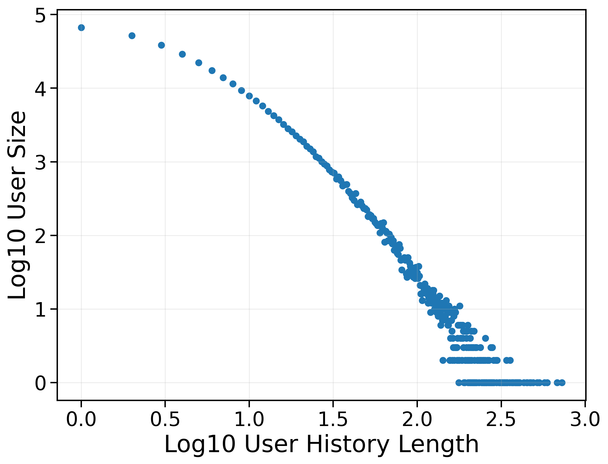

E-commerce search serves as a central interface, connecting user demands with massive product inventories and plays a vital role in our daily lives. However, in real-world applications, it faces challenges, including highly ambiguous queries, noisy product texts with weak semantic order, and diverse user preferences, all of which make it difficult to accurately capture user intent and fine-grained product semantics.
Nevertheless, existing e-commerce search datasets still suffer from notable limitations: queries are often heuristically constructed, cold-start users and long-tail products are filtered, query and product texts are anonymized, and datasets cover only a single stage of the search pipeline.
To address these challenges, we construct and release KuaiSearch—to the best of our knowledge, the largest e-commerce search dataset currently available. KuaiSearch is built upon real user search interactions from the Kuaishou platform, preserving authentic user queries and natural-language product texts, covering cold-start users and long-tail products, and spanning three key stages of the search pipeline: recall, ranking, and relevance judgment.
KuaiSearch covers the three primary product search entry points on the Kuaishou platform

The main entry point where users initiate product searches directly from the platform homepage, accounting for 44.86% of all search requests.

The dedicated e-commerce mall page, representing the largest proportion of searches at 49.20% with higher engagement metrics.
Search triggered from a product detail page, typically for comparison or exploration, achieving the highest AvgClick of 1.33 per session.
KuaiSearch covers three core components of the industrial e-commerce search pipeline
| Table | Size | Key Fields |
|---|---|---|
| User | 331,930 | user_id, gender, age, location |
| Item | 18,605,582 | item_id, title, brand, seller, category (L1/L2/L3) |
| Recall | 2,574,949 | user_id, session_id, query, impressed/clicked/purchased item ids |
| Ranking | 81,401,477 | user/item statistical features, behavior history, is_clicked, is_purchased |
| Relevance | 46,422 | query, title, brand, seller, attribute, relevance score (0–3) |
| Dataset | # Users | # Items | # Queries | Text |
|---|---|---|---|---|
| Amazon | 192,403 | 63,001 | 3,221† | Plain |
| JDsearch | 173,831 | 12,872,736 | 171,728 | Anon. |
| KuaiSearch | 331,930 | 18,605,582 | 2,574,949 | Plain |
† Queries in the Amazon dataset are manually constructed.
KuaiSearch achieves 1.72× more users, 1.45× more items, and 15× more queries than the second-largest dataset.
Comprehensive analysis of KuaiSearch from multiple perspectives


Category distribution and engagement metrics by query length
Queries of 5–8 characters account for 44.68% of all searches (the most common range). Very long queries (≥10 chars) achieve the highest SessCTR (0.5313) and AvgClick (1.33), indicating that more specific queries lead to stronger user engagement.
Queries span approximately 78 fine-grained first-level product categories with a pronounced long-tailed distribution.
KuaiSearch contains 331,930 users from more than 62 countries or regions
Users aged 12–50 comprise >80% of the population.
Comprehensive evaluation on KuaiSearch-Lite across three search tasks
Recall task evaluates the ability to retrieve relevant items from a large product corpus. Metrics: R@K and HR@K.
| Method | Type | R@10 | HR@10 | R@20 | HR@20 | R@50 | HR@50 |
|---|---|---|---|---|---|---|---|
| BM25 | Lexical | 0.0706 | 0.1001 | 0.1037 | 0.1427 | 0.1564 | 0.2088 |
| DocT5Query | Lexical | 0.0784 | 0.1098 | 0.1156 | 0.1594 | 0.1772 | 0.2381 |
| DPR-SDE | 0.0826 | 0.1210 | 0.1293 | 0.1814 | 0.2079 | 0.2769 | |
| DPR-ADE | 0.0818 | 0.1184 | 0.1254 | 0.1745 | 0.2026 | 0.2709 | |
| DSI | Generative | 0.0623 | 0.0965 | 0.0892 | 0.1344 | 0.1369 | 0.2018 |
| LTRGR | Generative | 0.0688 | 0.1049 | 0.0986 | 0.1477 | 0.1501 | 0.2184 |
Embedding-based retrieval methods outperform both lexical and generative methods. DPR-SDE with shared encoder achieves the best performance, consistent with prior findings on symmetric dual-encoder benefits.
CTR prediction task evaluates ranking models. Metrics: Logloss and ROC-AUC.
| Method | Architecture | Logloss ↓ | ROC-AUC ↑ |
|---|---|---|---|
| DNN | MLP | 0.1588 | 0.6258 |
| Wide & Deep | MLP+Memorization | 0.1598 | 0.6217 |
| DCN | Feature Crossing | 0.1611 | 0.6194 |
| DCN-v2 | Feature Crossing | 0.1603 | 0.6239 |
| DIN | Attention | 0.1606 | 0.6262 |
DIN achieves the best AUC via attention-based user interest modeling. DNN achieves lowest Logloss due to its simplicity avoiding overfitting. Performance gaps are small, suggesting future gains will come from richer feature engineering.
Relevance judgment task evaluates query-item matching. Metrics: ROC-AUC and PR-AUC.
| Model | Type | Model Size | ROC-AUC ↑ | PR-AUC ↑ |
|---|---|---|---|---|
| BGE-Base | Bi-Encoder | 0.1B | 0.7475 | 0.5791 |
| BGE-Large | Bi-Encoder | 0.32B | 0.7531 | 0.6052 |
| BERT-Chinese-Base | Cross-Encoder | 0.11B | 0.7606 | 0.6041 |
| BERT-Multilingual-Base | Cross-Encoder | 0.11B | 0.7737 | 0.6383 |
| XLM-RoBERTa-Base | Cross-Encoder | 0.27B | 0.7941 | 0.6658 |
| XLM-RoBERTa-Large | Cross-Encoder | 0.55B | 0.8005 | 0.6756 |
| Llama3.2-1B | LLM | 1.0B | 0.7602 | 0.5927 |
| Llama3.2-3B | LLM | 3.0B | 0.8093 | 0.6696 |
| Qwen3-0.6B | LLM | 0.6B | 0.7994 | 0.6524 |
| Qwen3-1.7B | LLM | 1.7B | 0.8215 | 0.6966 |
LLM-based generative classification achieves best performance. Qwen3-1.7B outperforms all baselines, demonstrating that models capturing fine-grained semantic relationships excel in relevance modeling. Qwen3-0.6B even surpasses Llama3.2-1B, showcasing superior parameter efficiency.
Sample data from KuaiSearch demo files
{
"user_id": 33407,
"gender": "M",
"age_bucket": "31-40",
"fre_country": "中国",
"fre_province": "辽宁",
"fre_city": "鞍山"
}{
"item_id": 5096459,
"item_title": "福利金钻绒床边地毯防尘免洗",
"brand_id": 2, "brand_name": "其他/other",
"seller_id": 2, "seller_name": "爱家家居地毯",
"category_level1_id": 2,
"category_level1_name": "家纺",
"category_level2_id": 2,
"category_level2_name": "地毯地垫",
"category_level3_id": 1,
"category_level3_name": "地毯"
}{
"user_id": 1,
"session_id": 1,
"impressed_item_ids": [38, 39, 40, 41, 42, 43, 44, 45, 46, 47, 48, 49, 50, 51, 52, 53, 54, 55, 56, 57, 58, 59, 60, 61, 62, 63, 64, 65, 66, 67, 68, 69, 70, 71, 72, 73, 74, 75, 76, 77, 78, 79, 80, 81, 82, 83, 84, 85, 86, 87, 88, 89, 90, 91, 92, 93, 94, 95, 96, 97, 98, 99, 100, 101, 102, 103, 104, 105, 106, 107, 108, 109, 110, 111, 112, 113, 114, 115, 116, 117, 118, 119, 120, 121, 122, 123, 124, 125, 126, 127, 128, 129, 130, 131, 132, 133, 134, 135, 136, 137, 138, 139, 140, 141, 142, 143, 144, 145, 146, 147, 148, 149, 150, 151, 152, 153, 154, 155, 156, 157, 158, 159, 160, 161, 162, 163, 164, 165, 166, 167, 168, 169, 170, 171, 172, 173, 174, 175, 176, 177, 178, 179, 180, 181, 182, 183, 184, 185, 186, 187, 188, 189, 190, 191, 192, 193, 194, 195, 196, 197, 198, 199, 200, 201, 202, 203, 204, 205, 206, 207, 208, 209, 210, 211, 212, 213, 214, 215, 216, 217, 218, 219, 220, 221, 222, 223, 224, 225],
"clicked_item_ids": [58, 63, 76, 80, 85, 92, 99, 100, 121, 122, 128, 136, 143, 157, 163, 213],
"purchased_item_ids": [],
"time_index": 384565,
"query": "广场舞服装女高档洋气"
}{
"user_id": 1,
"session_id": 1,
"user_fan_number": 9,
"user_follow_number": 65,
"time_index": 384565,
"search_entrance": "mall",
"recently_clicked_item_ids": [1, 2, 3, 4, 5, 6, 7, 8, 9, 10, 11, 12, 13, 14, 15, 16, 17, 18, 19, 20],
"recently_purchased_item_ids": [21, 22, 23, 24, 25, 26, 27, 28, 29, 30, 31, 32, 33, 34, 35, 36, 31, 37, 8, 31],
"query": "广场舞服装女高档洋气",
"target_item_id": 58,
"target_item_price": 5990.0,
"is_clicked": 1,
"is_purchased": 0,
"user_statistical_features": {"user_show_cnt_30d_hist": 0.0, "user_click_cnt_30d_hist": 0.0, "user_order_cnt_30d_hist": 0.0, "user_gmv_30d_hist": 0.0},
"target_item_statistical_features": {"item_show_cnt_30d_hist": 952.0, "item_click_cnt_30d_hist": 47.0, "item_order_cnt_30d_hist": 0.0}
}{
"query": "芈姐家半身裙",
"item_title": "液态棉后开衩半裙",
"brand": "无品牌",
"seller_name": "以晨服装搭配",
"attr_value": "无品牌,常规,直筒,中腰,开衩,其他,简约风,不限季节,长裙,其他,2025年秋季",
"score": 2
}Demo data is available in the GitHub repository. The full dataset will be released after the review process.
@article{li2026kuaisearch,
title={KuaiSearch: A Large-Scale E-Commerce Search Dataset for Recall, Ranking, and Relevance},
author={Li, Yupeng and Chen, Ben and Cheng, Mingyue and Liu, Zhiding and Zhang, Xuxin and Lei, Chenyi and Ou, Wenwu},
journal={arXiv preprint arXiv:2602.11518},
year={2026}
}